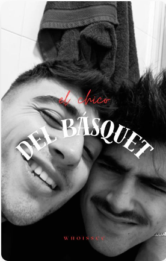
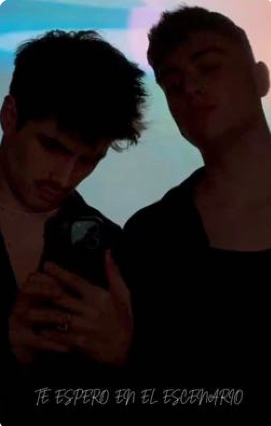
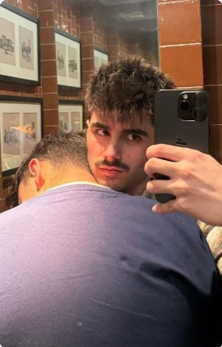

El Chico Del Básquet
Martin empieza llevando a su hermano pequeño a sus entrenamientos por obligación.
Juanjo es el nuevo entrenador que el club contrata tras su lesión, cosa que lo deja excluido durante un tiempo de la que se supone que es su zona de confort.
Quizás eran dos mundos a punto de colisionar y nadie se había dado cuenta.

Te espero en el escenario
Juanjo llegó a Madrid en busca de cumplir un sueño, dedicarse al baile. Ahora, años después, y tras haber ganado el premio nacional a mejor bailarín de España, se ha visto en la obligación de retirarse después de sufrir un accidente que le impide bailar.
Martin llega a la capital con un objetivo claro, ganar el próximo concurso de baile nacional. Para ello intentará que el antiguo ganador del concurso le de clases de danza.
¿Será Martin capaz de conseguir que Juanjo deje sus miedos atrás y le ayude a ganar el concurso?
Dos almas predestinadas a encontrarse.
¿Destinadas a amarse o a dañarse?
Cuerpos Heridos - Juantin
Martin Urrutia un chico de 18 años con ganas de comerse el mundo y volver ser aquel Martin que era hace dos años, antes del desastre de relación que tuvo. Era un chico tímido y precavido, siempre le ha costado socializar con gente nueva que no conoce.
Juan Jose Bona, 20 años, estudia ingeniería naval en la universidad de Madrid, tiene un numeroso grupo de amigos con los que prácticamente sale todos los fines de semana, ya sea para salir de fiesta o para simplemente tomarse unas cervezas.
Besos Azules Y Blancos // Juantin :)
Dos actores reconocidos mundialmente, Juanjo y Martin, se ven obligados a actuar en la misma película, ¿El problema? Que se enamoraron en una playa cuando eran jóvenes y no habían vuelto a coincidir nunca desde que uno le rompió el corazón al otro y desapareció sin dejar rastro.

peace
Fama, rumores, alcohol, fiestas. Ruido. Juanjo no conoce otro mundo que no sea uno absolutamente ensordecedor.
Y Martin, Martin solo conoce el silencio.
"¿Será suficiente si nunca puedo darte paz?"